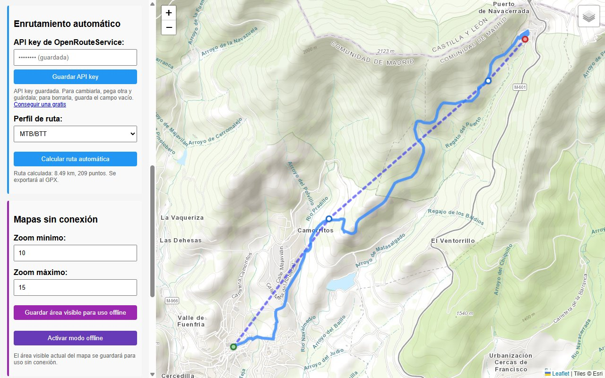

Un mapa para cada actividad
Topográfico para MTB, OSM Humanitarian para ciclismo y OpenStreetMap para autocaravana. Puedes cambiar de capa cuando quieras desde el control del mapa.
Código abierto · MIT · v1.2.0
Marca los puntos en el mapa, deja que OpenRouteService calcule el recorrido por caminos y carreteras y exporta un GPX con el track completo, la altitud y tus puntos de interés. Para MTB, ciclismo en ruta y autocaravana.

Elige MTB, ciclismo en ruta o autocaravana y haz clic en el mapa para añadir los puntos de paso. Arrástralos para ajustarlos.
Pulsa Calcular ruta automática y la ruta se ajusta a caminos y carreteras según el perfil elegido, con su distancia real.
Exportar como GPX guarda el track completo con altitud, los puntos de interés y los datos de la ruta, listo para tu GPS o tu app de navegación.
Instaladores para Windows, macOS y Linux. Para calcular rutas solo necesitas una API key gratuita de OpenRouteService.
Todo lo necesario para planificar una ruta sobre el mapa y llevarla a tu dispositivo, sin cuentas ni suscripciones.
Topográfico para MTB, OSM Humanitarian para ciclismo y OpenStreetMap para autocaravana. Puedes cambiar de capa cuando quieras desde el control del mapa.
Clic para añadir un punto, arrastrar para moverlo, clic sobre él para ver sus coordenadas y eliminarlo, o clic derecho para borrarlo al instante.
Cálculo con OpenRouteService entre hasta 50 puntos. Se exporta la geometría completa con la altitud de cada punto.
En rutas de autocaravana: áreas de pernocta y de servicio, agua, gasolineras, GLP y miradores, cada uno con su color y su símbolo Garmin en el GPX.
Abre tracks o rutas GPX (también de miles de puntos) para editarlos y exporta GPX 1.1 válido según el esquema oficial.
Guarda el área visible del mapa entre los niveles de zoom que elijas y consúltala después en modo offline.
| Tipo | Mapa | Perfil de cálculo | Datos que se guardan en el GPX |
|---|---|---|---|
| MTB | Topográfico (Esri) | MTB/BTT | Dificultad técnica y tipo de superficie |
| Ciclismo en ruta | OSM Humanitarian | Ciclismo en ruta | Nivel de tráfico y calidad del asfalto |
| Autocaravana | OpenStreetMap | Vehículo pesado | Altura máxima, tipo de carreteras, áreas de pernocta y puntos de interés |
El perfil se elige solo al cambiar el tipo de ruta, y puedes cambiarlo por cualquiera de los cinco: automóvil, vehículo pesado, ciclismo en ruta, MTB/BTT o a pie (senderismo).
| Punto de interés | Símbolo Garmin (<sym>) |
|---|---|
| 🅿️ Área de pernocta | Parking Area |
| 🚐 Área de servicio | Gas Station |
| 💧 Punto de agua | Drinking Water |
| ⛽ Gasolinera | Gas Station |
| 🔥 Punto de recarga de GLP | Gas Station |
| 🔭 Mirador | Scenic Area |
Capturas reales de la aplicación con rutas de ejemplo calculadas con OpenRouteService. Haz clic para ampliar.
Última versión: v1.2.0
Instalador .exe · 64 bits
Route-Creator-Setup-*.exe
Imagen .dmg · Apple Silicon
Route-Creator-*-arm64.dmg
Ejecutable .AppImage
Route-Creator-*.AppImage
¿Prefieres ver todos los archivos? Todas las versiones en GitHub.
SmartScreen puede avisar de que el editor es desconocido porque el instalador no está firmado. Pulsa Más información → Ejecutar de todas formas.
Si Gatekeeper bloquea la app, ábrela con clic derecho → Abrir, o ejecuta
xattr -cr "/Applications/Route Creator.app".
Dale permisos de ejecución al AppImage:
chmod +x Route-Creator-*.AppImage y lánzalo con doble clic.
git clone https://github.com/cmurestudillos/route-creator.git
cd route-creator
pnpm install
pnpm start # ejecutar en desarrollo
pnpm package:win # generar instalador de Windows
pnpm package:mac # generar imagen de macOS
pnpm package:linux # generar AppImage
Requisitos: Node.js 22.12+ y pnpm 11+. Los instaladores se generan en release/. En desarrollo
puedes poner tu API key en config.json (copia config.example.json) en lugar de
guardarla desde la app.
El cálculo automático de rutas usa OpenRouteService, que pide una API key gratuita. El resto de la app (mapas, edición, importar y exportar GPX) funciona sin ella.
La clave se guarda en la carpeta de configuración de la app, en tu equipo.
Elige el tipo de ruta (cambia el mapa, las opciones y el perfil de cálculo) y haz clic en el mapa para añadir puntos. El primero se marca en verde y el último en rojo. Arrastra un punto para moverlo, haz clic en él para ver sus coordenadas y el botón Eliminar punto, o clic derecho para borrarlo al instante. También puedes borrarlos con la X de la lista.
Con al menos 2 puntos (y como máximo 50), pulsa Calcular ruta automática. La ruta calculada se dibuja sobre los puntos, que se quedan como puntos de paso, y la distancia pasa a ser la real. Si mueves, añades o quitas un punto, la ruta calculada se descarta y hay que volver a calcularla.
Con el tipo Autocaravana aparecen los modos Ruta y Puntos de interés. En modo POI, cada clic en el mapa añade un punto del tipo elegido. También puedes pulsar Añadir POI: el siguiente clic coloca el punto y vuelves al modo en el que estabas.
Exportar como GPX guarda un GPX 1.1 con el nombre y el tipo de la ruta, el track (la ruta calculada completa con altitud o, si no la has calculado, tus puntos), los puntos de interés como waypoints con símbolo Garmin y los datos del tipo de ruta en los metadatos.
Importar GPX carga los puntos de track (<trkpt>) o, si no hay, los de
ruta (<rtept>), y los waypoints como puntos de interés con su nombre. Si el GPX indica
el tipo de ruta, se aplica. Un archivo que no es GPX válido se rechaza sin tocar la ruta actual.
Encuadra la zona, elige el zoom mínimo y máximo y pulsa Guardar área visible para uso offline. Para descargas grandes la app avisa del número de teselas antes de empezar. Después, Activar modo offline muestra el mapa desde las teselas guardadas.
├── main.js # proceso principal: ventana, diálogos, GPX, OpenRouteService e IPC
├── preload.js # puente IPC seguro (contextIsolation, lista blanca de canales)
├── renderer.js # interfaz: mapa Leaflet, puntos, POIs, cálculo, importación y offline
├── index.html # estructura y estilos de la ventana
├── assets/ # iconos de la app
└── docs/ # esta web (GitHub Pages)Construida con Electron, Leaflet para el mapa, localForage para guardar las teselas offline y fast-xml-parser para generar el GPX. Sin frameworks de UI: HTML, CSS y JavaScript.
Los issues y pull requests son bienvenidos. Abre un issue describiendo el bug (si puedes, adjunta un GPX mínimo que lo reproduzca) o la funcionalidad que echas de menos.